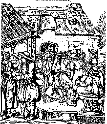
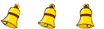

Al Leur Nevez

|
1. Va zud oa aet d'al leur nevez;
|
Me waske war he dornik gwenn. 12. Hag hi c'hoarzhiñ, c'hoarzhiñ ken dous Hag un êl eus ar baradoz. 13. He me mont da c'hoarzhiñ outi Ha ne garan mui nemet-hi. 14. Me yelo d'hi gweled henozh Ur voulouz ganin hag ur groaz. 15. Ur voulouzen du hag he c'hrooaz Prenet e foar Sant Nikolaz. 16. Sant Nikolaz, hor patron bras. A vo brav war he gougik noazh! 17. Hag ouzhpen ur walen arc'hant Da lakaat war he bizik koant, 18. Da lakaat warnañ da vizoù Ma zoñjo ennañ wechigoù. 19. O tont en-dro a di va dous Digouet ganin ar c'hemener. 20. Ar c'hemener am euz kavet, Hag ar zon-man e-deuz savet. Son kloc'h Nizon, son, son, Son kloc'h Nizon, son, son! |
Stummoù orin ar zon e kaier Keransker

|
P. 296
D'AL LEUR NEV INT AET, D'AR MANER (2) D'al leur nev int aet, d'ar maner Ne vi(j)e ket ganin chom er ger. (A) D'al leur nevez, pa oan digouet Daou pe dri dro zañs am-eus graet. Strinkañ a raye va c'halon O klevoud Mathurin o son. (5) Ken welan ur plac'h o tañsal Hi ken brav vel un durzhunell (6) He daoulagad evel glizhenn War ur bleuñv spern-gwenn da vintin. (7) Hag int ken glas vel bleunioù lin He dentigoù vel meinigoù fin. (8) He doulagad evel glizhenn Hag hi mont da sellout ouzhin. (9) Ha me mont da sellout outi Ha me mont raktal d'he fediñ (10) D'he fediñ vit ur gavotenn Ha ni, on-daou, war an dachenn. (11) Ha tre ma oan gant 'r gavotenn, Me waske war he dornig kreñv. (12.1) Hag hi don't neuze da c'hoarzhiñ Da c'hoarzhiñ, c'hoarzhiñ ouzhin. (13) Hag emaon o c'hoarzhiñ outi Ha ne garan mui nemeti. P. 297 RE-NI ZO AET D'AL LEUR NEVEZ (1) Re-ni zo aet d'al leur nevez (Bet a zo bet ul leur nevez) Ha me zo aet eno ivez. (a) D'al leur-nevez pa oan degouet Daou pe dri dro dañs em-eus graet. An Dall oa eno o soned Eno oa Maturin o son |
(3.2) Ha kalz a paotred ha merc'hed.
(4.1) Hag a ra frinkañ va c'halon. (5) Eno oa ur plac'h o tañsal Hi ken drant vel un durzhunell (b) Ganti un tavañcher lien fin (7.2) He dentigoù vel meinigoù fin (6) He daoulagad evel glizhen (8.2) Hag hi da vont da c'hoarzhiñ ouzhin. (13) Ha m'emaon da c'hoarzhiñ outi Ha ne garan mui nemeti. (c) Ur bouchig dezhi em-bije roet Ur bouchig m'am-bije kredet. Pa oa echu ar gavotenn, Hi a zeu d'an didheolenn. (9) Ha me en ur tremen outi Ha me mont d'an bal d'he fediñ. (d) Hag hi strinkas war an dachenn Ha me ' beg en he dornig wenn. Hag da stlepel gant homañ (10.2)Ha ni hon-daou war an dachenn. (11) Ha me a wask ha ma wask kreñv War he dornig ar femelenn. (e) Hag hi da gourzelled ouzhin Hag hi c'hoarzhiñ, c'hoarzhiñ ouzhin. (12) Hi da c'hoarzhiñ ouzhin ken dous Hag un ael deus ar baradoz. (f) Pa oamp-ni hon-daou gant ar bal C'hoant em-boa da reiñ ur pok dezhi, Kement a oan boemet ganti. Kredit e oan boemet ganti! Me'z in dizadorn d'he gweled Hag a gasin dezhi ur bouked. Ur bouked kaer a louzoù fin, Me'z in d'e dastum da vintin. Da vintin ha d'an goulou-deiz, Ma vint i kaeroc'h pa vo deiz. |
(14.2) Ur voulouzenn a gasin c'hoaz
(g) M'eus prenet d'ar foar e Pont-Kroaz. (15.1) Ur voulouzenn du gant he kroaz (16.2) A vo kaer war he c'hougig noazh! (17) Hag ouzhpenn ur gwalenn arc'hant Da lakaat en he dornik koant. (18) Da lakaat 'n he dorn da vijoù, Ma soñjo din-me ' wechigoù. (h) Mar ho-peus c'hoant da goût piv emaon, Me zo mab da Iwon Beron. Me zo mab da Iwon Beron, Ar c'haerrañ den deus ar c'hanton. P. 298 (19) O tont d'ar ger eus di va dous Degouet d'an hent 'r c'hemener kozh. (20) 'r c'hemener kozh am-eus kavet Hag ar zon-mañ eñ-deus savet. (i) Hag ar zon-mañ am-eus savet. Paotr ar maner 'deus he skrivet. Tec'hit, hag en deiz, hag en noz, Tec'hit diwar 'n hent Ar Goff kozh! Tec'hit mat, paotred dioutañ: Un tamm sorser eo, a glevan. Un tamm sorser eo, a glevan. Tost on da vout boemet gantañ. O tont dar ger da Vourc'h Nizon Eo bet savet ar ganaouenn. Deuit he klevoud, deut he kaned Deuit he kaned e Kernonen. Pa 'ma savet, kanet a vo Kaout drouk gant 'hini ' garo. Mab ar Beron en-deus kavet Hag ar zonenn en-deus kresket. Ar pezh a lar dre he c'hwital: "Jozef Ar Goff zo 'r ganer fall." |
TRADUCTION
(A)(a) En arrivant à l'aire neuve Deux, trois tours de danse j'ai fait. L'Aveugle jouait de la bombarde Et Mathurin l'accompagnait. (b) En tablier de toile fine. (c) Et j'aurais aimé lui donner Un baiser, mais voilà, je n'ose. Quand vint la fin de la gavotte, Elle vint à l'ombre s'asseoir. (d) Et elle jaillit sur la piste. Moi je l'ai prise par la main, Et m'y précipite avec elle. (e) Et avec un regard en coin Elle m'adresse un beau sourire (f) Et tandis qu'ainsi nous dansons Peu s'en faut que je ne l'embrasse, Tant je me trouvais sous le charme. Croyez bien qu'elle me charmait! Et j'irai samedi la voir Pour lui porter un beau bouquet. Un beau bouquet de fleurs fines Que j'aurai cueilli le matin, Oui, le matin-même, avant l'aube, Pour qu'au grand jour il soit plus beau. (g) Je l'ai achetée à la foire de Pont-Croix (h) Vous voulez savoir qui je suis? Je suis le fils d'Yves Péron. Je suis le fils d'Yves Péron, Le plus bel homme du canton. (i) Et ce chant que j'ai composé Le fils du manoir l'a écrit. Fuyez, de jour, comme de nuit! Si vous croisez le vieux Le Goff! Les gars, écartez-vous de lui: Il est un peu sorcier, dit-on. Oui, m'a-t-on dit, un peu sorcier. En rentrant au bourg de Nizon, Il a failli m'ensorceler. En rentrant au bourg de Nizon Cette chanson fut composée. Venez l'entendre et la chanter Oui la chanter à Kernonen. Elle est composée: qu'on la chante! Et le trouve mal qui voudra. Le fils de Péron qui l'a faite Est celui qui l'a rallongée. Et ce qu'il vous dit, lorsqu'il siffle, Cest: "Job Le Goff chante bien mal." |
TRANSLATION
(A)(a) I came to the new threshing floor And I danced a reel or two. The Blind man was playing the pipe And Mathurin the oboe . (b) She wore an apron of fine cloth. (c) I would have given her a kiss Had it been a thing that I durst. And when the gavotte was finished, She came and sat down in the shade. (d) Now she popped on the dancing floor And I seized her by the hand, And I hurried to follow her. (e) Out of the corner of her eye She watched me and she smiled to me. (f) Now that we are a-dancing I refrained from kissing her cheek, Her look, her smile are bewitching. She is so charming, believe me! On Saturday I'll visit her An offer her a fine bouquet. A bouquet of fine flowers I'll have picked early that day, Early that day, before sunrise, So that at noon they may best thrive. (g) I've bought it at the Pont-Croix fair (h) Now if you want to know my name, I am the son of Yves Péron. I am the son of Yves Péron, The handsomest man in this canton. (i) This song that I have composed The Lord's son put it in writing. Flee from him, by day and by night! If you should cross old Le Goff's way! Flee from him, to you all I say: He is a bit of a wizzard. That's what I was told, anyway. When from Nizon town I returned, He cast a spell, I'm sure on me. On my way back from Nizon town This song was composed for me. Come, all of you, hear and sing it At Kernonen sing it as well. For the song was made to be sung. Evil to him who evil thinks! The son of Péron has made it And he prolonged it recently With a whistled verse whose meaning Is: "Job Le Goff sings out of key." |
